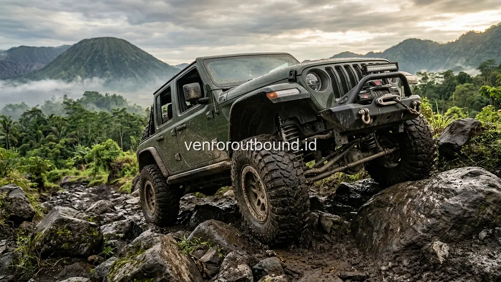

1. Memahami Makna Resilience dalam Dinamika Tim Korporat Modern
Jawaban singkat: Petualangan outbound offroad adalah media efektif untuk membangun ketangguhan mental (resilience) dan daya adaptasi tim kerja. Menghadapi rute dinamis di alam bebas melatih peserta saling mendukung, menjaga ketenangan dalam situasi sulit, dan memperkuat koordinasi kepemimpinan secara kontekstual melalui siklus experiential learning dan sesi debriefing terstruktur.
Di tengah iklim bisnis yang serba cepat dan penuh ketidakpastian (VUCA), kata resilience atau ketangguhan menjadi salah satu kompetensi paling dicari oleh para pemimpin perusahaan dan praktisi Human Resources. Banyak organisasi mendapati bahwa keterampilan teknis tinggi tidak selalu menjamin keberhasilan proyek apabila tim internal mudah goyah saat menghadapi perubahan target mendadak, kegagalan strategi awal, atau tekanan tenggat waktu yang ketat.
Resilience dalam konteks tim kerja bukanlah sikap pasrah menerima kesulitan, melainkan kapasitas kolektif sebuah kelompok untuk merespons tekanan secara positif, mengkalibrasi ulang strategi, dan bergerak maju bersama. Membangun kualitas mental ini tidak cukup dilakukan hanya melalui ceramah teori di dalam ruang rapat ber-AC. Dibutuhkan pengalaman nyata yang menuntut keterlibatan emosional, komunikasi intensif, dan ketergantungan antaranggota dalam suasana yang berbeda dari rutinitas harian.
2. Mengapa Petualangan Offroad Menjadi Media Simulasi Ketangguhan yang Efektif?
Aktivitas offroad melintasi trek tanah, bebatuan vulkanik, ceruk air, dan tanjakan curam di kawasan alam terbuka menghadirkan analogi nyata terhadap dinamika dunia profesional. Di atas kendaraan offroad, tidak ada jalan tol yang mulus dan lurus. Setiap kilometer perjalanan menuntut kewaspadaan, adaptasi terhadap guncangan medan, dan kepercayaan penuh terhadap sistem keselamatan yang disiapkan.
Ketika satu armada jeep menghadapi rute yang licin atau kontur jalan yang miring, respons spontan peserta di dalam kendaraan akan terlihat jelas. Beberapa orang mungkin merasa cemas, sementara yang lain berinisiatif memberikan semangat atau saling mengingatkan posisi duduk yang aman. Kondisi ini menciptakan ruang simulasi tanpa rekayasa artifisial, di mana ego individu mencair dan digantikan oleh kesadaran bahwa mereka berada dalam satu perahu yang sama untuk mencapai tujuan akhir.
3. Korelasi Pengalaman Jalur Offroad dengan Keterampilan Kerja Sehari-Hari
Pendekatan pembelajaran berbasis pengalaman (experiential learning cycle) bekerja optimal ketika tantangan fisik di alam mampu diproyeksikan kembali ke ruang kerja kantor. Berikut adalah pilar pembelajaran utama yang terstimulasi selama sesi offroad:
- Adaptasi terhadap Perubahan Jalur: Sama seperti perubahan arah pasar atau regulasi bisnis, kondisi trek alam bisa berubah sewaktu-waktu akibat cuaca atau tanah basah. Peserta dilatih untuk tidak panik dan fleksibel menerima penyesuaian rute.
- Komunikasi Efektif di Bawah Tekanan: Kebisingan mesin dan dinamika jalur menuntut peserta berkomunikasi secara singkat, jelas, dan saling menyimak tanpa memicu misinterpretasi.
- Membangun Rasa Percaya (Trust Building): Peserta belajar memercayakan kendali kendaraan kepada driver yang ditugaskan oleh penyedia layanan, sekaligus memercayai rekan di sampingnya untuk saling menjaga kenyamanan bersama.
- Empati dan Saling Mendukung: Tidak semua anggota tim memiliki ambang toleransi petualangan yang sama. Peserta yang lebih tenang diajak untuk memberi rasa aman kepada rekan yang merasa ragu atau tegang.

4. Kerangka Psikologis: Bagaimana Tantangan Alam Membentuk Karakter Organisasi
Dalam studi psikologi organisasi kontemporer, ketangguhan tim bukanlah atribut statis yang muncul dengan sendirinya, melainkan kapasitas dinamis yang berkembang melalui interaksi kelompok terhadap rintangan terstruktur. Pendekatan Experiential Learning yang dipopulerkan oleh David Kolb menunjukkan bahwa pembelajaran orang dewasa mencapai efektivitas tertinggi saat melibatkan empat siklus: pengalaman konkret (concrete experience), observasi reflektif (reflective observation), konseptualisasi abstrak (abstract conceptualization), dan eksperimentasi aktif (active experimentation).
Saat tim berada di dalam armada jeep offroad melintasi jalur pegunungan yang tidak tertebak, mereka langsung memasuki fase pengalaman konkret. Ketidakpastian kontur medan memicu pelepasan hormon adrenalin dan kortisol secara terukur, menuntut otak untuk beralih dari mode pasif menuju mode kewaspadaan aktif. Dalam kondisi ini, topeng formalitas kantor runtuh secara alami, memungkinkan respons emosional asli dan gaya komunikasi autentik muncul ke permukaan.
Fasilitator outbound profesional memanfaatkan momen-momen krusial ini untuk mengamati pola interaksi peserta: siapa yang mengambil inisiatif menenangkan kelompok, siapa yang cenderung panik, dan bagaimana anggota tim saling memvalidasi kekhawatiran tanpa saling menyalahkan. Pengamatan inilah yang kemudian dibedah secara mendalam dalam sesi refleksi pasca-kegiatan.
5. Lima Fase Pembentukan Mental Tangguh Melalui Ekspedisi Offroad
Untuk memastikan program petualangan memberikan dampak transformatif yang berkelanjutan bagi perusahaan, Vendor Outbound menyusun kurikulum ekspedisi melalui lima fase metodologis:
- Fase 1: Disrupsi Zona Nyaman (Comfort Zone Disruption): Mengajak peserta meninggalkan rutinitas meja kerja kantor dan memasuki lingkungan alam terbuka yang menuntut adaptasi fisik serta mental secara langsung.
- Fase 2: Navigasi Ketidakpastian (Navigating Uncertainty): Menghadapi rute perjalanan yang memiliki variasi rintangan tak terduga, melatih kesabaran, fleksibilitas berpikir, dan kepatuhan pada arahan keselamatan.
- Fase 3: Ketergantungan Kolektif (Interdependent Reliance): Menyadari bahwa kelancaran dan keselamatan konvoi membutuhkan kerja sama, komunikasi yang tepat waktu, dan sikap saling menjaga antarpeserta di dalam satu armada.
- Fase 4: Perayaan Capaian Bersama (Collective Achievement): Mencapai puncak bukit atau titik akhir rute secara utuh, menumbuhkan rasa bangga (sense of accomplishment) yang memperkuat ikatan emosional tim.
- Fase 5: Rekalibrasi Budaya Kerja (Workplace Integration): Merumuskan komitmen bersama mengenai nilai-nilai ketangguhan, komunikasi terbuka, dan saling dukung yang akan diimplementasikan dalam proyek-proyek kantor harian.
6. Tabel Analisis: Dari Pengalaman Trek Offroad Menuju Refleksi Kantor
Untuk membantu panitia dan manajemen memahami nilai investasi kegiatan ini, tabel berikut menguraikan transformasi dari pengalaman petualangan luar ruang menjadi kompetensi manajerial:
| Dinamika Trek Offroad | Tantangan Emosional & Fisik | Refleksi Perilaku Tim | Aplikasi di Lingkungan Kerja |
|---|---|---|---|
| Jalur Berlumpur & Berbatu | Ketidakpastian arah dan guncangan fisik medan | Tetap tenang, saling bantu, dan fokus menjaga stabilitas | Resilience menghadapi krisis, disrupsi, dan volatilitas target |
| Konvoi Multi-Armada | Laju kecepatan kendaraan kelompok harus seragam | Menahan ego laju pribadi dan menjaga jarak aman antarjeep | Koordinasi antardepartemen tanpa silo mentality atau ego sektoral |
| Hambatan Rute Tak Terduga | Trek tergenang air atau pohon tumbang mengharuskan jalur alternatif | Menerima keputusan operator secara fleksibel dan positif | Kelincahan agilitas bisnis (Agility Mindset) dalam pivoting strategi |
| Titik Perhentian Puncak | Kelegaan dan pelepasan stres setelah melewati rute terjal | Merayakan keberhasilan bersama rekan searmada secara tulus | Apresiasi capaian tim (milestone recognition) dan penguatan ikatan emosional |
7. Peran Kunci Fasilitator: Menjembatani Adrenalin dengan Kesadaran Diri
Perbedaan mendasar antara wisata rekreasi biasa dengan program outbound offroad korporat terletak pada keberadaan fasilitator profesional. Jika peserta hanya diajak berkeliling tanpa arahan edukatif, kegiatan tersebut hanya akan berhenti pada sensasi seru dan kelelahan fisik tanpa dampak jangka panjang bagi budaya perusahaan.
Fasilitator bertugas menyusun alur program dalam tiga tahap terpadu:
- Pre-Trip Safety & Goal Setting: Memberikan pemahaman mendasar mengenai tujuan pembelajaran, aturan keselamatan, dan etika beraktivitas di alam terbuka.
- Observation During Adventure: Memantau interaksi antarpeserta di titik-titik kumpul strategis untuk menangkap momen-momen kerja sama yang autentik.
- Structured Debriefing Session: Mengumpulkan peserta di area lapang atau aula untuk mendiskusikan apa yang dirasakan, bagaimana tantangan dihadapi, dan bagaimana pelajaran tersebut dapat diterapkan ke proyek kantor.
8. Kapan Offroad Tepat Dipilih dan Kapan Perlu Alternatif Lain?
Sebagai penyedia layanan yang mengedepankan objektivitas dan keselamatan, Vendor Outbound selalu mengingatkan bahwa program offroad bukan solusi seragam untuk seluruh profil kelompok. Evaluasi mendalam terhadap profil peserta sangat diperlukan sebelum mengambil keputusan pemesanan.
Program offroad sangat direkomendasikan untuk divisi penjualan, pemasaran, operasional, dan jajaran pimpinan yang membutuhkan penguatan daya tahan juang tinggi. Selain itu, program ini tepat untuk tim lintas fungsi yang sedang mengalami hambatan komunikasi atau silang pendapat yang membutuhkan pencairan suasana intensif.
Sebaliknya, program ini perlu dimodifikasi atau dialihkan ke konsep low-impact team building apabila mayoritas peserta memiliki riwayat medis khusus (seperti masalah tulang belakang kronis, penyakit jantung parah, atau kehamilan), atau jika tujuan utama acara adalah seminar akademis yang membutuhkan konsentrasi analitis tinggi.
Bangun Ketangguhan Mental & Soliditas Tim Anda
Rencanakan program outbound offroad yang terukur, edukatif, dan berstandar K3 tinggi bersama tim konsultan ahli VENDOR OUTBOUND.
Hubungi Kami via WhatsApp9. Kesimpulan: Menumbuhkan Budaya Pantang Menyerah di Era Disrupsi
Petualangan offroad di alam terbuka membuka perspektif baru bahwa ketangguhan tim bukanlah bakat bawaan, melainkan hasil dari latihan menghadapi ketidakpastian secara bersama-sama. Melalui rintangan jalan yang berliku, anggota tim belajar saling mengandalkan, menghargai peran rekan di sampingnya, dan menemukan kembali energi positif untuk berkarya.
Dengan perencanaan yang matang, tata kelola risiko yang ketat, dan fasilitasi debriefing yang menyentuh esensi perilaku kerja, kegiatan outbound offroad menjadi investasi strategis yang memberikan dampak nyata bagi kekompakan dan ketahanan mental tim perusahaan Anda.
Pertanyaan Sering Diajukan (FAQ)

Arby Ardiansyah
Arby Ardiansyah menulis konten informatif mengenai outbound, team building, corporate gathering, wisata outdoor, dan perencanaan kegiatan kelompok berbasis standar manajemen risiko terpadu di Indonesia.